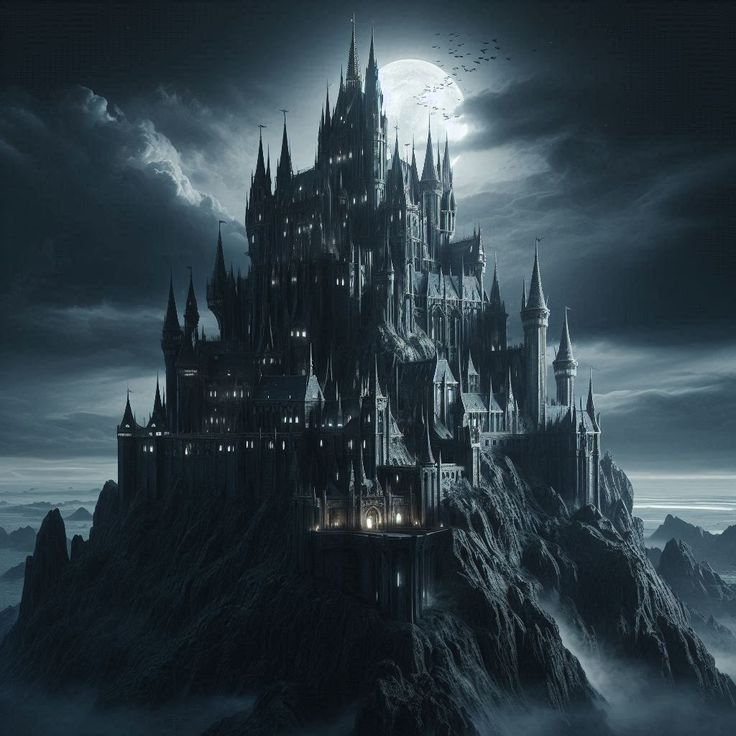
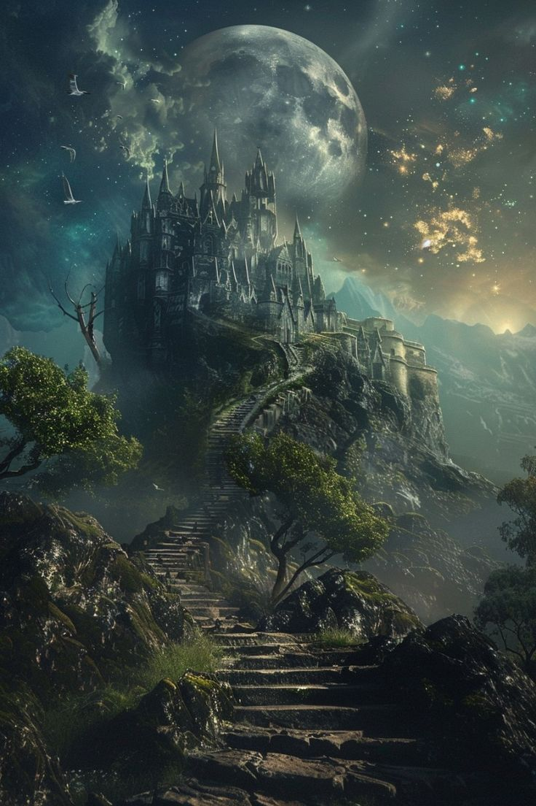
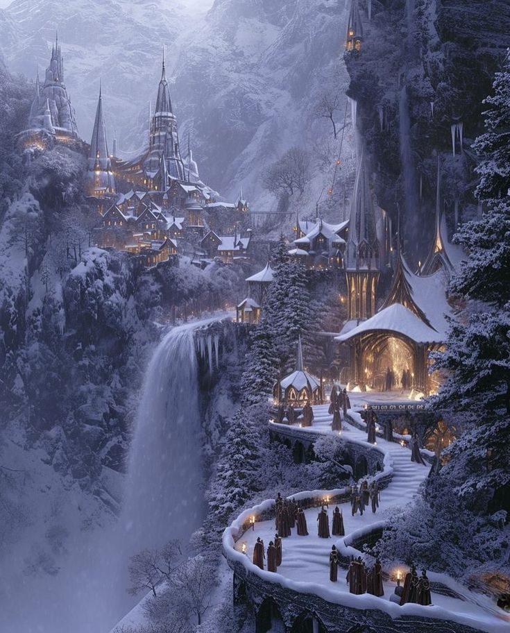
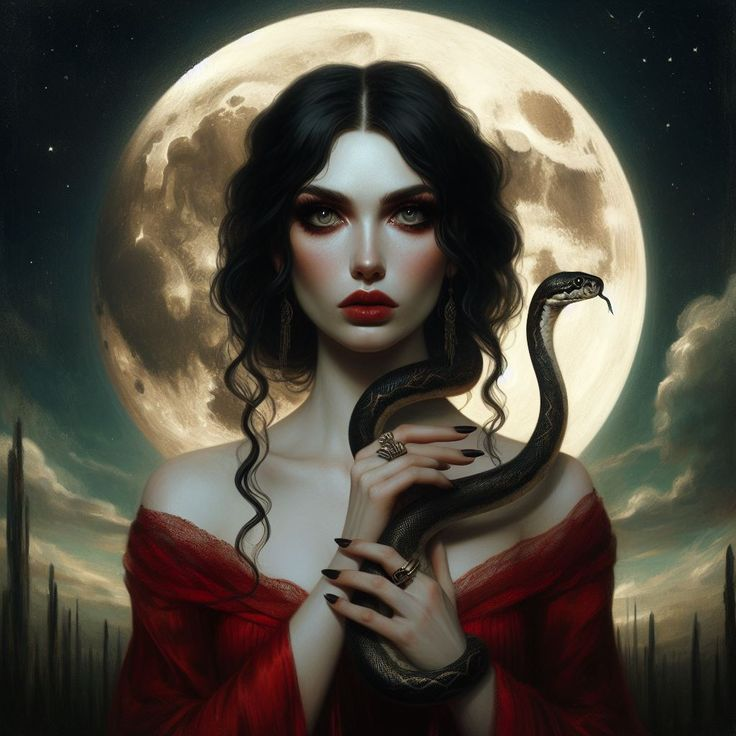
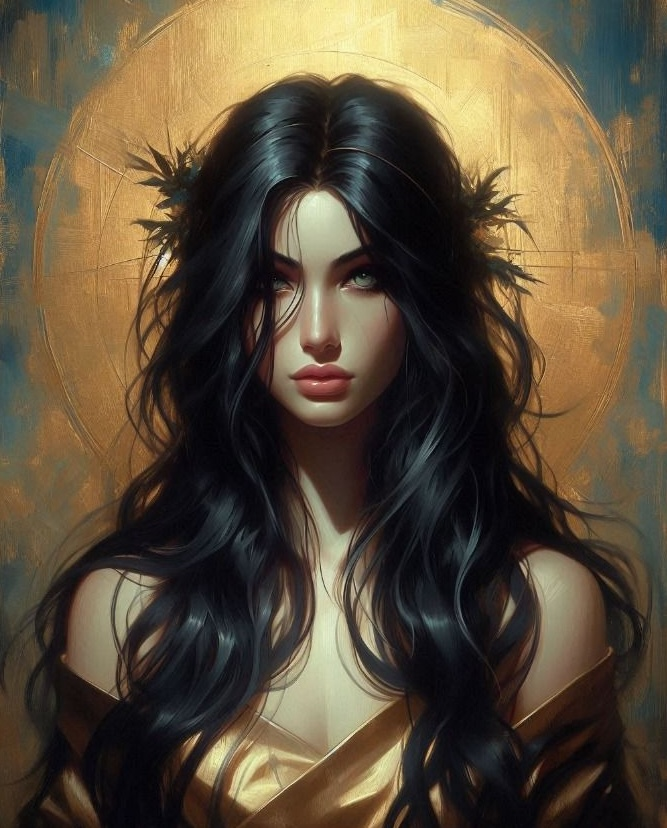
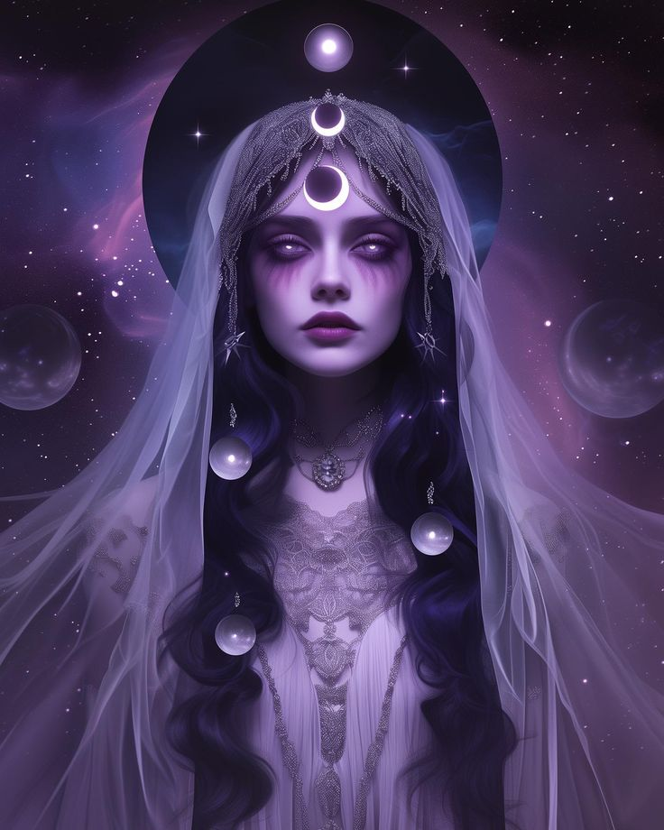
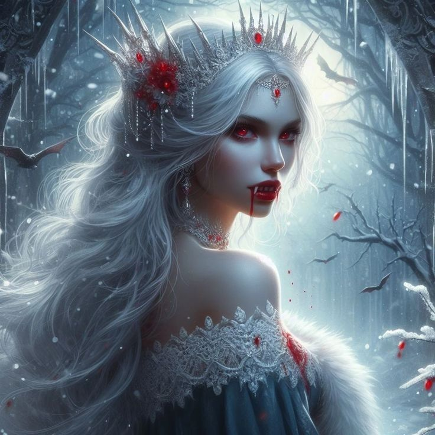

y descubre un mundo de horrores que acechan en la penumbra
Tres ciudades, tres formas de terror. Entra a cualquiera de ellas y encontrarás las historias que nuestros conductores han vivido dentro de sus instalaciones.




"Empecé un episodio antes de dormir. Terminé con la luz encendida hasta las tres de la mañana."

"La forma en que cada conductor cuenta su historia se siente como entrar a un lugar distinto cada vez."

"Descubrí el podcast por Suecia y ahora no puedo dejar de imaginar las otras dos ciudades."

"Es de las pocas producciones de terror en español que realmente logra construir un mundo propio."